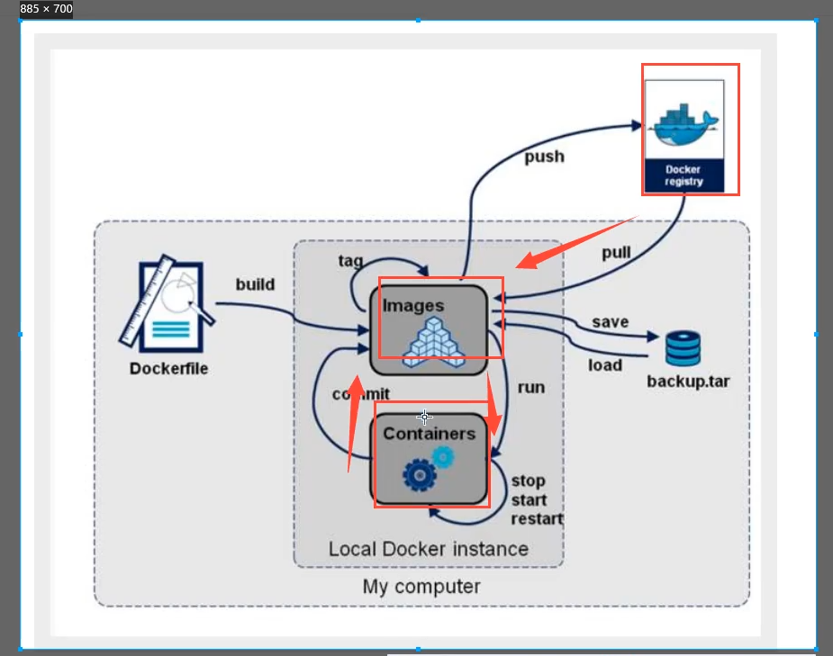
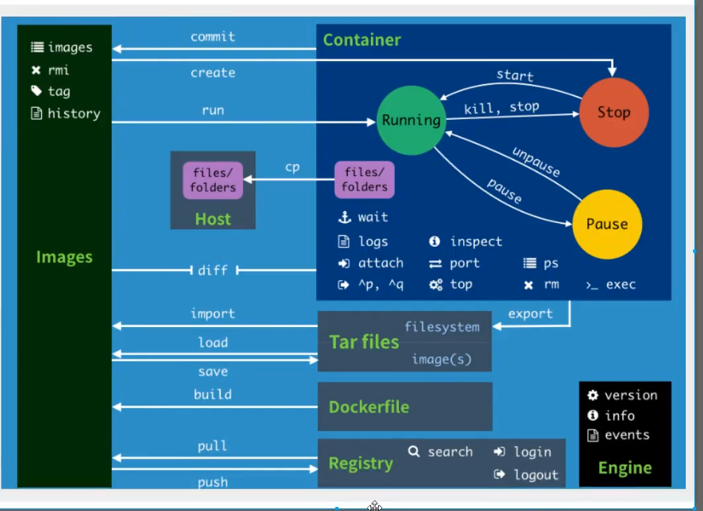

docker官方文档
https://zhuanlan.zhihu.com/p/187505981
docker安装
- 卸载旧版本
|
|
2.安装yum-utils
|
|
3.为yum源添加docker仓库位置
|
|
4.安装docker服务
|
|
5.启动docker服务并测试
|
|
镜像命令
-
搜索镜像
1docker search mysql --filter=STARS=5000 #过滤标星大于5000的镜像 -
下载镜像
1docker pull java:8 #镜像名称：镜像版本号 -
查看镜像
1 2 3docker images -a #列出所有镜像 docker images -q #只列出镜像的ID docker images -aq -
删除镜像
1 2 3docker rmi java:8 #指定名称删除镜像(也可以通过id伤删除) docker rmi -f java:8 #指定名称删除镜像（强制） docker rmi -f $(docker images -aq) #删除所有镜像 -
发布镜像
1 2 3 4 5 6# 登录Docker Hub docker login # 给本地镜像打标签为远程仓库名称 docker tag mall/mall-admin:1.0-SNAPSHOT macrodocker/mall-admin:1.0-SNAPSHOT # 推送到远程仓库 docker push macrodocker/mall-admin:1.0-SNAPSHOT -
压缩解压
1 2 3 4# 压缩 docker save # 解压 docker load
容器命令
-
新建并启动容器
1 2 3docker run -d --name nginx01 -p 3344:80 nginx docker run -it nginx /bin/bash docker run -d nginx #会自动停止-
-p：将宿主机和容器端口进行映射，格式为：宿主机端口:容器端口；
-
–name：指定容器名称，之后可以通过容器名称来操作容器；
-
-d：后台方式启动
-
-it：交互式方式启动，进入容器查看内容(ls,exit)
-
1 2exit #容器停止并退出 CTRL+p+q #容器不停止退出
-
-
查看容器
1 2 3docker ps #列出运行中的容器 docker ps -a #列出所有容器 docker ps -q #只列出容器的ID -
删除容器
1 2docker rm nginx #删除指定容器 docker rm -f $(docker ps -aq) #删除所有镜像 -
启动和停止容器
1 2 3 4docker start nginx docker restart nginx docker stop nginx docker kill nginx -
查看容器的日志
1 2docker logs nginx #查看容器产生的全部日志 docker logs -f -t --tail 10 nginx #前十条 -
查看容器进程信息
1docker top nginx -
查看容器元数据
1 2docker inspect nginx docker inspect --format '{{ .NetworkSettings.IPAddress }}' nginx #查看容器的IP地址 -
进入当前正在运行的容器
1 2docker exec -it nginx /bin/bash #进入容器开启新的终端 docker attach nginx #进入容器正在执行当前的代码 -
从容器内拷贝文件到主机上
1 2 3docker cp 容器id:容器内路径 目的主机路径 docker cp nginx:/home/hello.java /home touch hello.java #创建一个空的java文件
docker安装nginx
-
搜索并下载镜像
1 2 3 4 5 6 7 8 9search pull docker run -d --name nginx01 -p 3344:80 nginx docker ps curl localhost:3344 docker exec -it nginx01 /bin/bash whereis nginx cd /etc/nginx ls #可以发现nginx.conf文件每次改动nginx.conf都需要进入容器内部？ 数据卷技术
1 2 3docker run -d --name tomcat02 -p 3355:8080 tomcat docker exec -it tomcat02 /bin/bash cp -r webapps.dist/* webapps #没有webapps。阿里云镜像的原因，默认是最小的镜像1 2 3 4 5docker run -d --name elasticsearch -p 9200:9200 -p 9300:9300 -e "discovery.type=single-node" elasticsearch:7.6.2 #会自动退出 docker run -dit --name elasticsearch -p 9200:9200 -p 9300:9300 -e "discovery.type=single-node" elasticsearch:7.6.2 /bin/bash clear curl localhost:9200
可视化
portainer
镜像原理
镜像是一种轻量级、可执行的独立软件包，用来打包软件运行环境和基于运行环境开发的软件。它包含运行某个环境所需的所有内容，包括代码、库、环境变量和配置文件。
联合文件系统（UnionFS）
1、联合文件系统是docker镜像的基础，是一种分层的、轻量级并且高性能的文件系统，它支持对文件系统的修改作为一次提交来一层层叠加。
2、联合文件系统的特点：一次同时加载多个文件系统，但是从外观来看，只能看到一个文件系统。联合加载会把各层的文件系统叠加起来，这样最终的文件系统会包含所有的目录和文件。
3、docker进行可以通过分层来继承，基于基础镜像，可以制作各种具体的应用镜像。
镜像加载原理
1、docker的镜像实际上是由一层一层的文件系统组成，这种层级的文件系统是联合文件系统
2、docker自底向上由两个层级构成：bootfs和rootfs。
3、bootfs（boot file system）是docker镜像的最底层，主要包含bootloader和kernel，相当于linux内核加载器和linux内核。bootfs加载完成后内存使用权交给内核，此时系统会卸载bootfs。
4、rootfs（root file system）就是各种不同的linux操作系统发行版，比如ubuntu和centos。在rootfs之上，是典型linux系统中的/dev，/etc，/bin等目录和文件。rootfs可以很小，共用宿主机的内核即可。
5、镜像为什么采取分层结构：为了共享资源。有多个镜像都从相同的base镜像构建而来，那么宿主机只要在磁盘上保存一份base镜像，同时内存中也只需要加载一份base镜像，就可以为所有容器服务了。
镜像的特点
1、docker镜像都是只读的。
-2、当一个容器启动时，一个新的可写层被加载到镜像的顶部，这一层通常叫做“容器层”，“容器层”之下的都叫做“镜像层”。
commit镜像
|
|
相当于学习vm时的一个快照
容器数据卷
数据持久化
docker容器中产生的数据同步到本地
这就是卷技术！将容器的目录挂载到Linux上！
容器的持久化和同步操作！容器间也是可以数据共享的！双向绑定
|
|
实战mysql
|
|
navicat 链接服务器的3310 和容器内的3306映射，就可以连接上了！
假设我们将容器删除，挂载到本地的数据卷依旧不会丢失
挂载类型
|
|
|
|
数据卷容器
多个mysql同步数据
两个或多个容器之间实现数据共享
|
|
容器之间配置信息的传递，数据卷容器的生命周期一直持续到没有容器使用为止
DockerFile
|
|
|
|
总结


Docker网络
|
|
docker是如何处理容器网络访问的
|
|
docker使用的是linux的桥接模式，使用的技术是evth-pair（openstack，ovs的连接都是使用此技术，一对虚拟设备接口，他们是成对出现的，一段连着协议，一段彼此相连，evth-pair 就像一个桥梁，连接各种虚拟网络设备）技术！网卡是一对一对的


自定义网络
|
|
bridge：桥接模式（docker默认） host：和宿主机共享网络 none：不配置网络 我们上面启动容器通过 docker run -d -P –name tomcat01 tomcat 启动的，实际上docker默认为 docker run -d -P –name tomcat01 –net bridge tomcat，容器之间不能通过域名访问，只能使用 –link打通，这里我们自定义网络！
网络连通
|
|
连通之后，tomcat01直接加到了mynet网络下，一个容器就拥有两个IP地址
企业实战
Docker Compose
前面我们使用 Docker 的时候，定义 Dockerfile 文件，然后使用 docker build、docker run 等命令操作容器。然而微服务架构的应用系统一般包含若干个微服务，每个微服务一般都会部署多个实例，如果每个微服务都要手动启停，那么效率之低，维护量之大可想而知 使用 Docker Compose 可以轻松、高效的管理容器，它是一个用于定义和运行多容器 Docker 的应用程序工具
工程、服务、容器 Docker Compose 将所管理的容器分为三层，分别是工程（project）、服务（service）、容器（container） Docker Compose 运行目录下的所有文件（docker-compose.yml）组成一个工程,一个工程包含多个服务，每个服务中定义了容器运行的镜像、参数、依赖，一个服务可包括多个容器实例
Docker Swarm
Swarm 是目前 Docker 官方唯一指定（绑定）的集群管理工具。Docker 1.12 内嵌了 swarm mode 集群管理模式。
docker swarm：集群管理，子命令有 init, join,join-token, leave, update docker node：节点管理，子命令有 demote, inspect,ls, promote, rm, ps, update docker service：服务管理，子命令有 create, inspect, ps, ls ,rm , scale, update docker stack/deploy：试验特性，用于多应用部署，等正式版加进来再说。